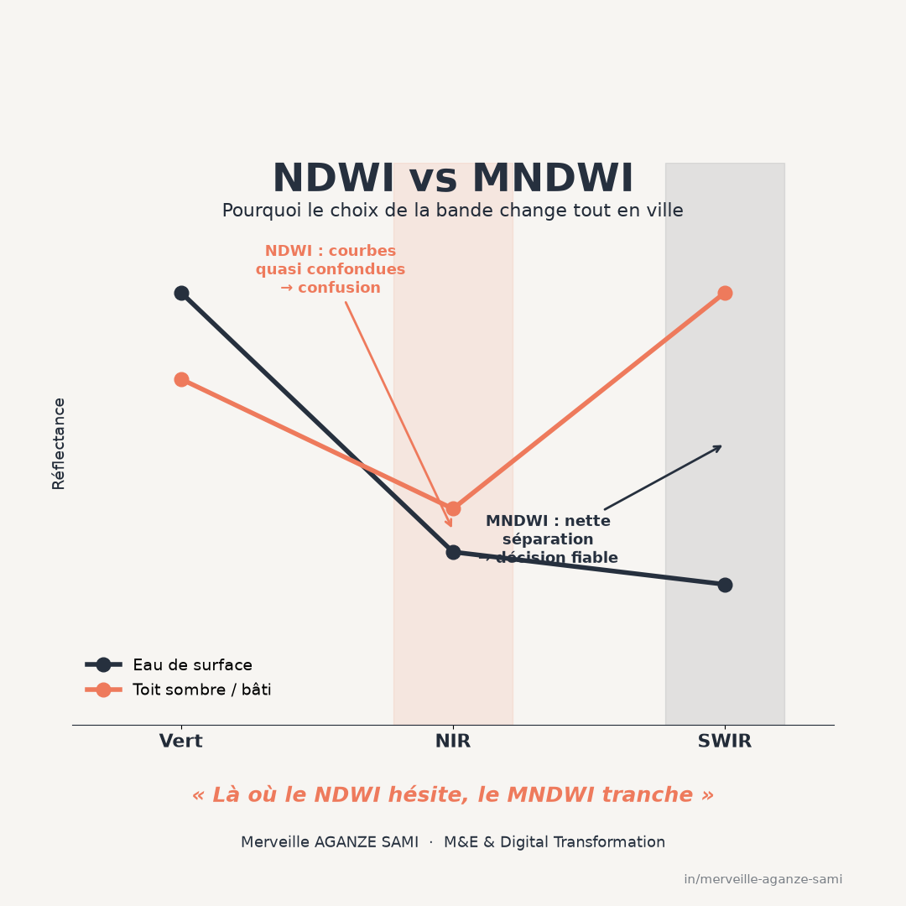

La délimitation de l'eau de surface à partir d'images satellitaires repose couramment sur un indice normalisé combinant la bande verte et la bande proche infrarouge. Cette formulation exploite une propriété physique nette : l'eau absorbe fortement dans le proche infrarouge alors que la végétation et les sols y réfléchissent (McFeeters, 1996).
Le contraste obtenu est excellent sur un plan d'eau isolé, une rivière à découvert ou une zone inondée en milieu rural. Il se dégrade en revanche nettement en milieu urbain dense, où l'indice classe comme eau des surfaces qui n'en sont pas : toitures sombres, revêtements bitumés humides, ombres portées de bâtiments.
1. L'origine du problème
La confusion tient à la bande utilisée. Dans le proche infrarouge, l'eau et de nombreuses surfaces artificielles sombres présentent des réflectances voisines. Le rapport normalisé qui les oppose à la bande verte produit alors des valeurs proches, et aucun seuil ne permet de les séparer de façon fiable.
Cette ambiguïté a une conséquence opérationnelle immédiate : elle se concentre précisément dans les zones habitées, c'est-à-dire là où une carte d'inondation détermine des décisions d'alerte ou d'assistance. La sur-détection y est donc particulièrement problématique.
2. La substitution de bande
Le principe de la correction. Le remplacement de la bande proche infrarouge par une bande infrarouge à ondes courtes exploite un comportement spectral différent : l'eau y présente une réflectance très faible, tandis que les surfaces bâties conservent une réflectance sensiblement plus élevée. L'écart entre les deux catégories s'en trouve creusé, ce qui améliore la séparation en contexte urbain (Xu, 2006).
Sur Sentinel-2, cette formulation mobilise les bandes B3 et B11 ; sur Landsat 8/9, les bandes 3 et 6. Une différence de résolution native entre les deux bandes doit être traitée par rééchantillonnage, opération dont la méthode mérite d'être documentée car elle affecte la finesse des limites obtenues.
3. Les formulations à plusieurs bandes
Lorsque la scène présente à la fois des surfaces bâties sombres et des zones d'ombre marquées — relief, immeubles élevés — deux bandes ne suffisent pas toujours. Des indices combinant quatre à cinq bandes ont été développés pour améliorer la séparation dans ces configurations, avec des variantes selon que la scène comporte ou non des surfaces artificielles étendues (Feyisa et al., 2014).
Les comparaisons systématiques entre méthodes montrent qu'aucune formulation ne domine dans tous les contextes, et que la performance dépend du type de paysage, de la turbidité de l'eau et de la présence de végétation aquatique (Fisher et al., 2016). Le choix relève donc d'un test local, non d'une préférence de principe.
4. La question du seuil
Un indice produit une valeur continue ; la carte d'eau résulte d'un seuillage. Une valeur de zéro est fréquemment retenue par défaut, mais elle n'a pas de fondement universel : la valeur optimale dépend de la turbidité, de la profondeur, de la végétation immergée et des conditions d'éclairement.
- Seuillage adaptatif. Déterminer le seuil à partir de l'histogramme de chaque image, plutôt que de le fixer une fois pour toutes, améliore la stabilité entre dates.
- Validation sur points de référence. Quelques dizaines de points d'eau et de non-eau, identifiés sur imagerie à haute résolution, permettent d'estimer les taux d'omission et de commission et de calibrer le seuil.
- Masque des surfaces permanentes. Distinguer l'eau permanente de l'eau saisonnière requiert une référence multi-annuelle ; des jeux de données globaux fournissent cette base et permettent d'isoler la composante événementielle (Pekel et al., 2016).
- Cohérence temporelle. Pour un suivi saisonnier, le seuil et la méthode doivent rester identiques d'une date à l'autre, faute de quoi la variation mesurée reflète en partie un changement de traitement.
5. Limites de l'approche optique
- Couverture nuageuse. Les épisodes d'inondation coïncident fréquemment avec des conditions météorologiques défavorables à l'observation optique. Une image utilisable peut n'être disponible que plusieurs jours après le pic, ce qui limite l'usage en réponse d'urgence. L'imagerie radar, insensible aux nuages, répond à cette contrainte — sujet développé dans l'article sur la cartographie radar des inondations.
- Eau sous couvert végétal. Une zone inondée sous une canopée dense n'est pas détectée : le signal provient de la végétation, non de la lame d'eau.
- Eaux peu profondes et turbides. Une faible lame d'eau chargée en sédiments présente une signature intermédiaire entre eau et sol nu, ce qui produit des omissions en zone de crue.
- Pixels mixtes. À dix ou vingt mètres de résolution, les limites de plans d'eau et les cours d'eau étroits occupent une fraction de pixel. La surface estimée dépend alors fortement du seuil retenu.
Points essentiels
- L'indice classique confond eau et surfaces artificielles sombres en milieu urbain
- La substitution de l'infrarouge à ondes courtes au proche infrarouge creuse l'écart spectral
- Aucune formulation ne domine dans tous les paysages : le choix se teste localement
- Le seuil n'est pas une constante ; il se calibre et se documente
- L'optique ne voit ni sous les nuages ni sous la canopée : le radar est complémentaire
Aucun indice spectral n'est optimal indépendamment du paysage observé. Le réflexe utile n'est pas de retenir la formulation la plus citée, mais de vérifier laquelle sépare effectivement les catégories qui importent dans le contexte étudié.
Références
- Feyisa, G. L., Meilby, H., Fensholt, R., & Proud, S. R. (2014). Automated Water Extraction Index: A new technique for surface water mapping using Landsat imagery. Remote Sensing of Environment, 140, 23–35. doi.org/10.1016/j.rse.2013.08.029
- Fisher, A., Flood, N., & Danaher, T. (2016). Comparing Landsat water index methods for automated water classification in eastern Australia. Remote Sensing of Environment, 175, 167–182. doi.org/10.1016/j.rse.2015.12.055
- McFeeters, S. K. (1996). The use of the Normalized Difference Water Index (NDWI) in the delineation of open water features. International Journal of Remote Sensing, 17(7), 1425–1432. doi.org/10.1080/01431169608948714
- Pekel, J.-F., Cottam, A., Gorelick, N., & Belward, A. S. (2016). High-resolution mapping of global surface water and its long-term changes. Nature, 540, 418–422. doi.org/10.1038/nature20584
- Xu, H. (2006). Modification of normalised difference water index (NDWI) to enhance open water features in remotely sensed imagery. International Journal of Remote Sensing, 27(14), 3025–3033. doi.org/10.1080/01431160600589179

Merveille Aganze Sami
Conseillère MEL & Gestion de Bases de Données. Plus de 9 ans d'expérience en suivi-évaluation, SIG et digitalisation auprès d'organisations internationales (GIZ, Enabel) en RD Congo.
Un suivi des inondations à mettre en place ?
Prendre contact